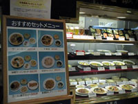
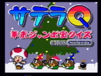

Historical Communities¶
The SatellaOFF Events (1999)¶
The SatellaOFF events were the first known real-life meetups of Satellaview enthusiasts, occurring at the very end of the Satellaview's active lifetime and continuing for a brief period after broadcasts ceased. The name is a pun: "Satella" (Satellaview) + "OFF" (offline meeting, as opposed to online).1
Event 1: March 28-29, 1999 -- Higashi-Shinagawa, Tokyo¶

Organizer: St.GIGA (announced via the "BS-X no Hanashi" site's bulletin board)
Venue: Near Higashi-Shinagawa station, Tokyo. Started at a restaurant called Sukosuki/Kushikatsu (スゴス串カツ).
Participants (6 webmasters of major Satellaview fan sites):
| Handle | Site | URL |
|---|---|---|
| HIRO (organizer) | Hiro's HomePage | www5.airnet.ne.jp/hiro-n/ |
| Blackeye (ブラックアイハード) | BS-Xの話 (BS-X Story) | www.clio.ne.jp/home/koba/ |
| Yulil (ユリル) | Fan's Groups | www2s.biglobe.ne.jp/~cgisite/ |
| Pane-pon-master (パネポンマスター) | パネポンまにあっく (Panel de Pon Maniac) | hm.aitai.ne.jp/~kanbaya/ |
| Mizota (みぞた) | KIMATTA! | www.geocities.co.jp/Milkyway-Orion/4620/ |
| Halki Hiro (ハルキ・ヒロ) | 楽宝荘 (Rakuho-so) | www.speed.co.jp/halki/ |
Activities: - Lunch at Sukosuki restaurant - Visited Shinjuku game center (played beatmania, Dance Dance Revolution) - Took purikura (sticker photo booth) photos - HIRO hosted Pane-pon-master overnight - Next day: visited Nakano Broadway, played BS F-Zero 2, Zelda: Ocarina of Time debug ROM, Dynamite Trax (rare Square sound novel), group SatellaQuiz session2

Quiz results: HIRO 48pts, Pane-pon-master 56pts, Halki Hiro 70pts, Mizota 75pts. The "oshougatsu-san" (NPC) scored 232/500.3
Event 2: April 29, 1999 -- Kameido/Nakano, Tokyo¶
Trigger: A post from Yulil about a "Konami New Game Exhibition" at Kameido.
Participants: HIRO, Mizota, Halki Hiro (spontaneously called via phone from Nakano)
Activities: - Visited AMUSEMENT GIGA arcade (beatmania 4thMIX, GUITAR FREAKS, DDR) - Visited Kameido Tenjin shrine festival - Played beatmania GOTTAMIX (just released) - Three purikura sessions4
Historical Significance¶
The SatellaOFF pages contain a St.GIGA Data Broadcast Timeline (1995-1999) tracking the shift from normal data broadcasts to Sound Link games to the Satellaview Guide, ending with broadcast cessation around June 1999. This makes them a primary source for the service's chronology.5
HIRO maintained exhaustive diaries with ~25+ photos per event. The pages also feature character illustrations of all attendees drawn by Blackeye, creator of the BS-X no Hanashi site.6
Additional participant reports were created by other attendees: - Mizota: "Mizota's Secret Diary March 28-29" on his site KIMATTA!13 - Halki Hiro: "BS SatellaOFF War Report" on Rakuho-so, with detailed per-item commentary14 - Pane-pon-master: "Finally! Satellaview OFF!!" with a humorous post-event writeup15 - Yulil: "Sound Novel - SatellaOFF" featuring extensive Sound Novel-style narrative of the event16
The SatellaOFF event was first announced via the "BS-X no Hanashi" site's bulletin board, posted by St.GIGA themselves. The six webmasters who attended represented the entire active Satellaview fan community at the time.6
BS-X Cult (Late 1990s -- Early 2000s)¶
BS-X Cult was a Satellaview ROM site from the late 1990s maintained by Pachuka (also known as RealaNightmaren). It was an offshoot of Pachuka's earlier EmuCult website, a general emulation site founded around 1999.7
The ROMar Connection¶
Pachuka claimed to have stolen the ROMs hosted on BS-X Cult from a person known as ROMar. ROMar is believed to have been the source of:8
- The BS Dragon Quest prototype (a unique build with all 4 weeks combined in a single ROM with a debug episode-select menu and valid BS-X checksum)
- The BS Zelda no Densetsu ROMs (Map 1 and Map 2)
- Potentially the BS Zelda no Densetsu: Inishie no Sekiban ROMs
ROMar's true identity has never been discovered. Satellablog author KiddoCabbusses attempted to track ROMar down through Pachuka but was unsuccessful. When asked for details, Pachuka was unresponsive and demonstrated poor knowledge of the games he had leaked.9
Pachuka's Legacy¶
Pachuka's larger site X-Cult (x-cult.org) expanded to cover game prototypes across multiple platforms. The site went through several iterations including Sonic CulT (1999), which became the largest Sonic prototype research site of its era. Pachuka was reportedly arrested in the early 2000s for sexual assault of minors, and site ownership transferred to Sazpaimon.10
As of 2026, x-cult.org displays only "IT'S OVER" and appears permanently defunct.11
The Original Satellablog (2008-2009)¶
The Satellablog was founded in April 2008 at satellablog.blogspot.com by the user known as KiddoCabbusses ("Kiddo"). Its stated objectives were:12
- Spread information about the Satellaview
- Correct misinformation already present on the web
- Host videos of unreleased games and archived radio programs
The blog maintainer made significant efforts toward international communication by:
- Linking to auto-translation tools
- Writing posts partially in Japanese
- Welcoming comments in any language
- Maintaining an IRC channel (#serioushax on Caffienet)17
In April 2009, the blog relocated to superfamicom.org/blog due to technical difficulties and accuracy concerns.18 The last update by KiddoCabbusses was August 26, 2009.
Key Achievements¶
- Documented the history of Satellaview emulation and ROM dumping19
- Exposed eBay profiteering from restored Satellaview content20
- Connected the international Satellaview community
- Launched The English Satellaview Wiki (September 2009)21
- Coordinated with LuigiBlood, Matthew Callis, and d4s22
The blog was revived in 2024-2026 by a new maintainer, danyl, who now posts regular Satellaview ROM dumps and memory pack content.23
-
Encyclopedia Dramatica, ResetEra, Graalians forum sources ↩